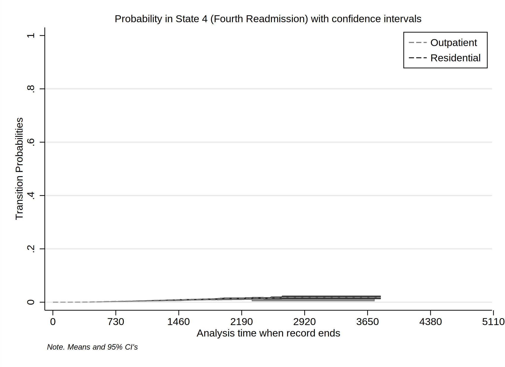
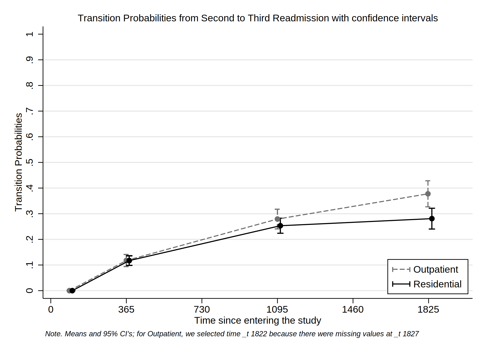

Date created: 15 Jun 2021.
Instalo los comandos que no estén disponibles.
. *<< dd_do : noout > >
. clear all
. *https://onlinelibrary.wiley.com/doi/epdf/10.1002/sim.8894
. *https://pclambert.net/pdf/Stata_Nordic2019_Lambert.pdf
. *https://slidetodoc.com/automated-reports-using-stata-chuck-huber-ph-d/
. *~Mi unidad\Alvacast\SISTRAT 2019 (github)\_supp_mstates\stata\12874_2020_1192_MOESM1_ESM.docx
. *https://opr.princeton.edu/workshops/Downloads/2015May_StataGraphicsKoffman.pdf
. *http://www.bruunisejs.dk/StataHacks/My%20commands/matprint/matprint_demo/
. *https://pure.au.dk/portal/files/140882936/ScientificWorkInStataGoneEasy.pdf
. *https://www.stata.com/meeting/nordic-and-baltic18/slides/nordic-and-baltic18_Bruun.pdf
. *https://github.com/dvorakt/TIER_exercises/blob/master/dyndoc_debt_growth/debt%20and%20growth%20stat
> a%20dyndoc.do
.
. cap noi net install multistate, from("https://www.mjcrowther.co.uk/code/multistate")
checking multistate consistency and verifying not already installed...
all files already exist and are up to date.
. cap noi net install merlin, from("https://www.mjcrowther.co.uk/code/merlin/")
checking merlin consistency and verifying not already installed...
all files already exist and are up to date.
. cap noi net install merlin, from(https://www.mjcrowther.co.uk/code/merlin)
checking merlin consistency and verifying not already installed...
all files already exist and are up to date.
. cap noi ssc install matrixtools
checking matrixtools consistency and verifying not already installed...
the following files already exist and are different:
C:\Users\CISS Fondecyt\ado\plus\c\crossmat.ado
C:\Users\CISS Fondecyt\ado\plus\d\dummynizer.ado
C:\Users\CISS Fondecyt\ado\plus\f\filaby.ado
C:\Users\CISS Fondecyt\ado\plus\m\matprint.ado
C:\Users\CISS Fondecyt\ado\plus\m\matrix2stata.ado
C:\Users\CISS Fondecyt\ado\plus\m\mat2xl.ado
C:\Users\CISS Fondecyt\ado\plus\m\metadata.ado
C:\Users\CISS Fondecyt\ado\plus\o\onewai.ado
C:\Users\CISS Fondecyt\ado\plus\r\regmat.ado
C:\Users\CISS Fondecyt\ado\plus\s\strofnum.ado
C:\Users\CISS Fondecyt\ado\plus\s\strtonum.ado
C:\Users\CISS Fondecyt\ado\plus\s\subselect.ado
C:\Users\CISS Fondecyt\ado\plus\s\sumat.ado
C:\Users\CISS Fondecyt\ado\plus\w\which_edit.ado
C:\Users\CISS Fondecyt\ado\plus\l\lmatrixtools.mata
C:\Users\CISS Fondecyt\ado\plus\l\ltoxl_v13.mata
C:\Users\CISS Fondecyt\ado\plus\l\ltoxl_v14.mata
C:\Users\CISS Fondecyt\ado\plus\l\lmatrixtools.mlib
no files installed or copied
(no action taken)
. cap noi ssc install estwrite
checking estwrite consistency and verifying not already installed...
all files already exist and are up to date.
Obtuvimos el archivo y la carpeta en donde se trabajará.
. cap confirm file "/volumes/sdrive/data//"
. if _rc != 0 {
. cap noi cd "/volumes/sdrive/data//"
unable to change to /volumes/sdrive/data//
. global pathdata "/volumes/sdrive/data//"
. di "Ubicación= ${pathdata}; Fecha: `c(current_date)', considerando un sistema operativo `c(o
> s)' para el usuario: `c(username)'"
Ubicación= /volumes/sdrive/data//; Fecha: 15 Jun 2021, considerando un sistema operativo Windows para
> el usuario: CISS Fondecyt
. }
.
. cap confirm file "E:\Mi unidad\Alvacast\SISTRAT 2019 (github)\_mult_state_ags\ten_st_msprep_jun.dta"
. if _rc != 0 {
. cap noi cd "E:\Mi unidad\Alvacast\SISTRAT 2019 (github)\_mult_state_ags\"
unable to change to E:\Mi unidad\Alvacast\SISTRAT 2019 (github)\_mult_state_ags\
. global pathdata "E:\Mi unidad\Alvacast\SISTRAT 2019 (github)\_mult_state_ags"
. global pathdata2 "E:/Mi unidad/Alvacast/SISTRAT 2019 (github)/_mult_state_ags/"
. di "Ubicación= ${pathdata}; Fecha: `c(current_date)', considerando un sistema operativo `c(o
> s)' para el usuario: `c(username)'"
Ubicación= E:\Mi unidad\Alvacast\SISTRAT 2019 (github)\_mult_state_ags; Fecha: 15 Jun 2021, consideran
> do un sistema operativo Windows para el usuario: CISS Fondecyt
. }
.
.
. cap confirm file "G:\Mi unidad\Alvacast\SISTRAT 2019 (github)\_mult_state_ags\ten_st_msprep_jun.dta"
. if _rc != 0 {
. cap noi cd "G:\Mi unidad\Alvacast\SISTRAT 2019 (github)"
. global pathdata "G:\Mi unidad\Alvacast\SISTRAT 2019 (github)\_mult_state_ags"
. global pathdata2 "G:/Mi unidad/Alvacast/SISTRAT 2019 (github)/_mult_state_ags/"
. di "Ubicación= ${pathdata}; Fecha: `c(current_date)', considerando un sistema operativo `c(o
> s)' para el usuario: `c(username)'"
. }
.
. pwd
G:\Mi unidad\Alvacast\SISTRAT 2019 (github)\_mult_state_ags
.
. == "C:\Users\CISS Fondecyt\OneDrive\Documentos" {
== is not a valid command name
r(199);
. cap noi cd "G:\Mi unidad\Alvacast\SISTRAT 2019 (github)\_mult_state_ags"
G:\Mi unidad\Alvacast\SISTRAT 2019 (github)\_mult_state_ags
. global pathdata "G:\Mi unidad\Alvacast\SISTRAT 2019 (github)\_mult_state_ags"
. global pathdata2 "G:/Mi unidad/Alvacast/SISTRAT 2019 (github)/_mult_state_ags/"
. di "Ubicación= ${pathdata}; Fecha: `c(current_date)', considerando un sistema operativo `c(o
> s)' para el usuario: `c(username)'"
Ubicación= G:\Mi unidad\Alvacast\SISTRAT 2019 (github)\_mult_state_ags; Fecha: 15 Jun 2021, consideran
> do un sistema operativo Windows para el usuario: CISS Fondecyt
. }
} is not a valid command name
r(199);
Path data= G:\Mi unidad\Alvacast\SISTRAT 2019 (github)_mult_state_ags; Timestamp: 15 Jun 2021, considering that is a Windows OS for the username: CISS Fondecyt
Primero abro los archivos que corresponden, elimino variables por el momento que podrían ampliar mi muestra erróneamente, y defino etiquetas de variables. El archivo está ubicado en y se llama: G:/Mi unidad/Alvacast/SISTRAT 2019 (github)/_mult_state_ags/ten_st_msprep_jun.dta
Luego definimos la matriz de transición.
| to | > | |||||
|---|---|---|---|---|---|---|
| start | Readmission_status | R > eadmission2_status | Readmission3_status | Readmission4_status | ||
| from | start | 1 | > | |||
| Readmission_status | > 2 | |||||
| Readmission2_status | > | 3 | ||||
| Readmission3_status | > | 4 | ||||
| Readmission4_status | > |
y transformarmos la base de datos en formato largo, acorde con los lineamientos. Adicionalmente, añadimos la matriz de datos observados.
Finalmente, la estructura de la base de datos asume las siguientes transiciones:
Configuro la base como supervivencia en formato de tiempo de renovación.
. stset _stop, enter(_start) failure(_status=1) //* scale(365.25) id(id)
failure event: _status == 1
obs. time interval: (0, _stop]
enter on or after: time _start
exit on or before: failure
------------------------------------------------------------------------------
31,972 total observations
0 exclusions
------------------------------------------------------------------------------
31,972 observations remaining, representing
9,262 failures in single-record/single-failure data
44795762 total analysis time at risk and under observation
at risk from t = 0
earliest observed entry t = 0
last observed exit t = 4,431
=============================================================================
=============================================================================
Luego generé un estimador de Aalen-Johanssen para obtener las probabilidades de transición de los datos desde el tiempo 0 (inicio o admisión a la base). Para ello separé las probabilidades de transición de acuerdo al tipo de plan a la base.
. *http://fmwww.bc.edu/repec/bocode/m/msaj.ado
. msaj, transmatrix(mat_four_states) by(tipo_de_plan_res_1) ci
. rename (P_AJ_*) (ajprob*)
Para generar las figuras, sólo selecciono las transiciones válidas



Calculamos las probabilidades de transición desde un determinado estado en los tiempos 90, 365, 1095 y 1826
variable trp_ajprob* not found
variable _t2 not found
(0 real changes made)
(31,972 missing values generated)
variable company not found r(111);




=============================================================================
=============================================================================
Generamos una lista de modelos paramétricos sin variables predictivas. Entre ellas, el Exponencial, weibull, gompertz, log-logistico, log-normal y gama generalizado. Adicionalmente, se definió una serie de modelos royston-palmar con una función de splines cúblicos restringidos, en que los knots (#gl -1) se definen en cada percentil de la distribución. En este caso, no existe una variable perdictiva más que la función de riesgo acumulado. Guardamos las estimaciones en el archivo `parmodels_m_jun’.
. forvalues i = 1/4 {
2. // Exponential
. set seed 2125
3. qui cap merlin (_stop if _trans == `i', family(exponential, fail(_status) ltruncated(_sta
> rt)))
4. estimates store m`i'_exp
5. *estimates save "${pathdata2}parmodels.ster", replace
. // Weibull
. set seed 2125
6. qui cap merlin (_stop if _trans == `i', family(weibull, fail(_status) ltruncated(_start))
> )
7. estimates store m`i'_weib
8. *estimates save "${pathdata2}parmodels.ster", append
. // Gompertz
. set seed 2125
9. qui cap merlin (_stop if _trans == `i', family(gompertz, fail(_status) ltruncated(_start)
> ))
10. estimates store m`i'_gom
11. *estimates save "${pathdata2}parmodels.ster", append
. // Log logistic
. set seed 2125
12. qui cap merlin (_stop if _trans == `i', family(loglogistic, fail(_status) ltruncated(_sta
> rt)))
13. estimates store m`i'_logl
14. *estimates save "${pathdata2}parmodels.ster", append
. // Log normal
. set seed 2125
15. qui cap merlin (_stop if _trans == `i', family(lognormal, fail(_status) ltruncated(_start
> )))
16. estimates store m`i'_logn
17. *estimates save "${pathdata2}parmodels.ster", append
. // Generalised gamma
. set seed 2125
18. qui cap merlin (_stop if _trans == `i', family(ggamma, fail(_status) ltruncated(_start)))
19. estimates store m`i'_ggam
20. *estimates save "${pathdata2}parmodels.ster", append
. // Royston Parmar models
. set seed 2125
21. forvalues j=2/10 {
22. qui cap merlin (_stop if _trans == `i', family(rp, df(`j') fail(_status) ltruncat
> ed(_start)))
23. estimates store m`i'_rp`j'
24. *estimates save "${pathdata2}parmodels.ster", append
. }
25. }
.
. estwrite _all using "${pathdata2}parmodels_m_jun.sters", replace
(saving m1_exp)
(saving m1_weib)
(saving m1_gom)
(saving m1_logl)
(saving m1_logn)
(saving m1_ggam)
(saving m1_rp2)
(saving m1_rp3)
(saving m1_rp4)
(saving m1_rp5)
(saving m1_rp6)
(saving m1_rp7)
(saving m1_rp8)
(saving m1_rp9)
(saving m1_rp10)
(saving m2_exp)
(saving m2_weib)
(saving m2_gom)
(saving m2_logl)
(saving m2_logn)
(saving m2_ggam)
(saving m2_rp2)
(saving m2_rp3)
(saving m2_rp4)
(saving m2_rp5)
(saving m2_rp6)
(saving m2_rp7)
(saving m2_rp8)
(saving m2_rp9)
(saving m2_rp10)
(saving m3_exp)
(saving m3_weib)
(saving m3_gom)
(saving m3_logl)
(saving m3_logn)
(saving m3_ggam)
(saving m3_rp2)
(saving m3_rp3)
(saving m3_rp4)
(saving m3_rp5)
(saving m3_rp6)
(saving m3_rp7)
(saving m3_rp8)
(saving m3_rp9)
(saving m3_rp10)
(saving m4_exp)
(saving m4_weib)
(saving m4_gom)
(saving m4_logl)
(saving m4_logn)
(saving m4_ggam)
(saving m4_rp2)
(saving m4_rp3)
(saving m4_rp4)
(saving m4_rp5)
(saving m4_rp6)
(saving m4_rp7)
(saving m4_rp8)
(saving m4_rp9)
(saving m4_rp10)
(file G:/Mi unidad/Alvacast/SISTRAT 2019 (github)/_mult_state_ags/parmodels_m_jun.sters saved)
Seleccionamos el modelo con menores índices de ajuste.
| comb | ||||||
| N | ll0 | ll | df | AIC | BIC | |
| m1_exp | 6398 | . | -61482.45 | 1 | 122966.9 | 122973.7 |
| m1_weib | 6398 | . | -61232.39 | 2 | 122468.8 | 122482.3 |
| m1_gom | 6398 | . | -2701638 | 0 | 5403276 | 5403276 |
| m1_logl | 6398 | . | -61061.42 | 2 | 122126.8 | 122140.4 |
| m1_logn | 6398 | . | -61061.42 | 2 | 122126.8 | 122140.4 |
| m1_ggam | 6398 | . | -60645.86 | 3 | 121297.7 | 121318 |
| m1_rp2 | 6398 | . | -60538.31 | 3 | 121082.6 | 121102.9 |
| m1_rp3 | 6398 | . | -60534.36 | 4 | 121076.7 | 121103.8 |
| m1_rp4 | 6398 | . | -60529.3 | 5 | 121068.6 | 121102.4 |
| m1_rp5 | 6398 | . | -60520.92 | 6 | 121053.8 | 121094.4 |
| m1_rp6 | 6398 | . | -60521.86 | 7 | 121057.7 | 121105.1 |
| m1_rp7 | 6398 | . | -60518.31 | 8 | 121052.6 | 121106.7 |
| m1_rp8 | 6398 | . | -60519.38 | 9 | 121056.8 | 121117.6 |
| m1_rp9 | 6398 | . | -60517.01 | 10 | 121054 | 121121.7 |
| m1_rp10 | 6398 | . | -60516.97 | 11 | 121055.9 | 121130.4 |
| m2_exp | 2011 | . | -18489.37 | 1 | 36980.75 | 36986.35 |
| m2_weib | 2011 | . | -18394.5 | 2 | 36792.99 | 36804.21 |
| m2_gom | 2011 | . | -715488 | 0 | 1430976 | 1430976 |
| m2_logl | 2011 | . | -19401.45 | 2 | 38806.89 | 38818.1 |
| m2_logn | 2011 | . | -19341.79 | 2 | 38687.59 | 38698.8 |
| m2_ggam | 2011 | . | -19319.98 | 3 | 38645.96 | 38662.77 |
| m2_rp2 | 2011 | . | -18358.51 | 3 | 36723.01 | 36739.83 |
| m2_rp3 | 2011 | . | -18357.91 | 4 | 36723.81 | 36746.24 |
| m2_rp4 | 2011 | . | -18355.4 | 5 | 36720.79 | 36748.82 |
| m2_rp5 | 2011 | . | -18355.53 | 6 | 36723.06 | 36756.7 |
| m2_rp6 | 2011 | . | -18355.22 | 7 | 36724.44 | 36763.69 |
| m2_rp7 | 2011 | . | -18355.17 | 8 | 36726.35 | 36771.2 |
| m2_rp8 | 2011 | . | -18354.94 | 9 | 36727.87 | 36778.33 |
| m2_rp9 | 2011 | . | -18353.48 | 10 | 36726.96 | 36783.02 |
| m2_rp10 | 2011 | . | -18353.03 | 11 | 36728.05 | 36789.72 |
| m3_exp | 647 | . | -5815.327 | 1 | 11632.65 | 11637.13 |
| m3_weib | 647 | . | -5790.936 | 2 | 11585.87 | 11594.82 |
| m3_gom | 647 | . | -183172.5 | 0 | 366345 | 366345 |
| m3_logl | 647 | . | -6256.191 | 2 | 12516.38 | 12525.33 |
| m3_logn | 647 | . | -6244.689 | 2 | 12493.38 | 12502.32 |
| m3_ggam | 647 | . | -6243.71 | 3 | 12493.42 | 12506.84 |
| m3_rp2 | 647 | . | -5790.657 | 3 | 11587.31 | 11600.73 |
| m3_rp3 | 647 | . | -5790.497 | 4 | 11588.99 | 11606.88 |
| m3_rp4 | 647 | . | -5787.854 | 5 | 11585.71 | 11608.07 |
| m3_rp5 | 647 | . | -5788.199 | 6 | 11588.4 | 11615.23 |
| m3_rp6 | 647 | . | -5787.899 | 7 | 11589.8 | 11621.11 |
| m3_rp7 | 647 | . | -5787.503 | 8 | 11591.01 | 11626.79 |
| m3_rp8 | 647 | . | -5787.625 | 9 | 11593.25 | 11633.5 |
| m3_rp9 | 647 | . | -5787.692 | 10 | 11595.38 | 11640.11 |
| m3_rp10 | 647 | . | -5787.096 | 11 | 11596.19 | 11645.39 |
| m4_exp | 206 | . | -1820.765 | 1 | 3643.53 | 3646.858 |
| m4_weib | 206 | . | -1814.629 | 2 | 3633.257 | 3639.913 |
| m4_gom | 206 | . | -66459.54 | 0 | 132919.1 | 132919.1 |
| m4_logl | 206 | . | -1993.32 | 2 | 3990.64 | 3997.296 |
| m4_logn | 206 | . | -1987.081 | 2 | 3978.162 | 3984.817 |
| m4_ggam | 206 | . | -1984.03 | 3 | 3974.06 | 3984.044 |
| m4_rp2 | 206 | . | -1810.314 | 3 | 3626.629 | 3636.612 |
| m4_rp3 | 206 | . | -1810.277 | 4 | 3628.554 | 3641.866 |
| m4_rp4 | 206 | . | -1810.23 | 5 | 3630.46 | 3647.1 |
| m4_rp5 | 206 | . | -1810.193 | 6 | 3632.386 | 3652.353 |
| m4_rp6 | 206 | . | -1810.096 | 7 | 3634.192 | 3657.487 |
| m4_rp7 | 206 | . | -1809.546 | 8 | 3635.092 | 3661.715 |
| m4_rp8 | 206 | . | -1809.579 | 9 | 3637.159 | 3667.11 |
| m4_rp9 | 206 | . | -1809.089 | 10 | 3638.178 | 3671.457 |
| m4_rp10 | 206 | . | -1809.636 | 11 | 3641.272 | 3677.879 |
Luego, se hace necesario incorporar tiempos de entrada
=============================================================================
=============================================================================
. forvalues i = 1/4 {
2. // Exponential
. set seed 2125
3. qui cap merlin (_stop tipo_de_plan_res_1 TD_1 TD_2 TD_3 TD_4 if _trans == `i', family(exp
> onential, fail(_status) ltruncated(_start)))
4. estimates store m2_`i'_exp
5. *estimates save "${pathdata2}parmodels.ster", append
. // Weibull
. set seed 2125
6. qui cap merlin (_stop tipo_de_plan_res_1 TD_1 TD_2 TD_3 TD_4 if _trans == `i', family(wei
> bull, fail(_status) ltruncated(_start)))
7. estimates store m2_`i'_weib
8. *estimates save "${pathdata2}parmodels.ster", append
. // Gompertz
. set seed 2125
9. qui cap merlin (_stop tipo_de_plan_res_1 TD_1 TD_2 TD_3 TD_4 if _trans == `i', family(gom
> pertz, fail(_status) ltruncated(_start)))
10. estimates store m2_`i'_gom
11. *estimates save "${pathdata2}parmodels.ster", append
. // Log logistic
. set seed 2125
12. qui cap merlin (_stop tipo_de_plan_res_1 TD_1 TD_2 TD_3 TD_4 if _trans == `i', family(log
> logistic, fail(_status) ltruncated(_start)))
13. estimates store m2_`i'_logl
14. *estimates save "${pathdata2}parmodels.ster", append
. // Log normal
. set seed 2125
15. qui cap merlin (_stop tipo_de_plan_res_1 TD_1 TD_2 TD_3 TD_4 if _trans == `i', family(log
> normal, fail(_status) ltruncated(_start)))
16. estimates store m2_`i'_logn
17. *estimates save "${pathdata2}parmodels.ster", append
. // Generalised gamma
. set seed 2125
18. qui cap merlin (_stop tipo_de_plan_res_1 TD_1 TD_2 TD_3 TD_4 if _trans == `i', family(gga
> mma, fail(_status) ltruncated(_start)))
19. estimates store m2_`i'_ggam
20. *estimates save "${pathdata2}parmodels.ster", append
. // Royston Parmar models
. set seed 2125
21. forvalues j=2/10 {
22. qui cap merlin (_stop tipo_de_plan_res_1 TD_1 TD_2 TD_3 TD_4 if _trans == `i', fa
> mily(rp, df(`j') fail(_status) ltruncated(_start)))
23. estimates store m2_`i'_rp`j'
24. *estimates save "${pathdata2}parmodels.ster", append
. }
25. }
.
. estwrite _all using "${pathdata2}parmodels_m2_jun.sters", replace
(saving m2_1_exp)
(saving m2_1_weib)
(saving m2_1_gom)
(saving m2_1_logl)
(saving m2_1_logn)
(saving m2_1_ggam)
(saving m2_1_rp2)
(saving m2_1_rp3)
(saving m2_1_rp4)
(saving m2_1_rp5)
(saving m2_1_rp6)
(saving m2_1_rp7)
(saving m2_1_rp8)
(saving m2_1_rp9)
(saving m2_1_rp10)
(saving m2_2_exp)
(saving m2_2_weib)
(saving m2_2_gom)
(saving m2_2_logl)
(saving m2_2_logn)
(saving m2_2_ggam)
(saving m2_2_rp2)
(saving m2_2_rp3)
(saving m2_2_rp4)
(saving m2_2_rp5)
(saving m2_2_rp6)
(saving m2_2_rp7)
(saving m2_2_rp8)
(saving m2_2_rp9)
(saving m2_2_rp10)
(saving m2_3_exp)
(saving m2_3_weib)
(saving m2_3_gom)
(saving m2_3_logl)
(saving m2_3_logn)
(saving m2_3_ggam)
(saving m2_3_rp2)
(saving m2_3_rp3)
(saving m2_3_rp4)
(saving m2_3_rp5)
(saving m2_3_rp6)
(saving m2_3_rp7)
(saving m2_3_rp8)
(saving m2_3_rp9)
(saving m2_3_rp10)
(saving m2_4_exp)
(saving m2_4_weib)
(saving m2_4_gom)
(saving m2_4_logl)
(saving m2_4_logn)
(saving m2_4_ggam)
(saving m2_4_rp2)
(saving m2_4_rp3)
(saving m2_4_rp4)
(saving m2_4_rp5)
(saving m2_4_rp6)
(saving m2_4_rp7)
(saving m2_4_rp8)
(saving m2_4_rp9)
(saving m2_4_rp10)
(file G:/Mi unidad/Alvacast/SISTRAT 2019 (github)/_mult_state_ags/parmodels_m2_jun.sters saved)
Seleccionamos el modelo con menores índices de ajuste.
| comb | ||||||
| N | ll0 | ll | df | AIC | BIC | |
| m2_1_exp | 6398 | . | -4737.633 | 6 | 9487.266 | 9527.848 |
| m2_1_weib | 6398 | . | -4692.928 | 7 | 9399.856 | 9447.203 |
| m2_1_gom | 6398 | . | -4.5e+114 | 0 | 9.0e+114 | 9.0e+114 |
| m2_1_logl | 6398 | . | -4702.744 | 7 | 9419.488 | 9466.834 |
| m2_1_logn | 6398 | . | -4702.524 | 7 | 9419.048 | 9466.395 |
| m2_1_ggam | 6398 | . | -4685.679 | 8 | 9387.358 | 9441.468 |
| m2_1_rp2 | 6398 | . | -4689.376 | 8 | 9394.753 | 9448.863 |
| m2_1_rp3 | 6398 | . | -4687.502 | 9 | 9393.004 | 9453.877 |
| m2_1_rp4 | 6398 | . | -4683.852 | 10 | 9387.703 | 9455.341 |
| m2_1_rp5 | 6398 | . | -4683.895 | 11 | 9389.789 | 9464.19 |
| m2_1_rp6 | 6398 | . | -4683.979 | 12 | 9391.959 | 9473.124 |
| m2_1_rp7 | 6398 | . | -4682.596 | 13 | 9391.192 | 9479.121 |
| m2_1_rp8 | 6398 | . | -4682.024 | 14 | 9392.047 | 9486.74 |
| m2_1_rp9 | 6398 | . | -4681.797 | 15 | 9393.595 | 9495.051 |
| m2_1_rp10 | 6398 | . | -4680.957 | 16 | 9393.914 | 9502.134 |
| m2_2_exp | 2011 | . | -4692.043 | 6 | 9396.086 | 9429.724 |
| m2_2_weib | 2011 | . | -4683.238 | 7 | 9380.476 | 9419.721 |
| m2_2_gom | 2011 | . | -4683.238 | 7 | 9380.476 | 9419.721 |
| m2_2_logl | 2011 | . | -5012.516 | 7 | 10039.03 | 10078.28 |
| m2_2_logn | 2011 | . | -5013.75 | 7 | 10041.5 | 10080.74 |
| m2_2_ggam | 2011 | . | -4992.877 | 8 | 10001.75 | 10046.6 |
| m2_2_rp2 | 2011 | . | -4683.016 | 8 | 9382.033 | 9426.884 |
| m2_2_rp3 | 2011 | . | -4682.728 | 9 | 9383.456 | 9433.913 |
| m2_2_rp4 | 2011 | . | -4681.86 | 10 | 9383.72 | 9439.783 |
| m2_2_rp5 | 2011 | . | -4681.207 | 11 | 9384.415 | 9446.085 |
| m2_2_rp6 | 2011 | . | -4680.939 | 12 | 9385.878 | 9453.155 |
| m2_2_rp7 | 2011 | . | -4680.787 | 13 | 9387.573 | 9460.456 |
| m2_2_rp8 | 2011 | . | -4680.83 | 14 | 9389.66 | 9468.15 |
| m2_2_rp9 | 2011 | . | -4680.722 | 15 | 9391.443 | 9475.539 |
| m2_2_rp10 | 2011 | . | -4680.648 | 16 | 9393.297 | 9482.999 |
| m2_3_exp | 647 | . | -4762.713 | 6 | 9537.425 | 9564.259 |
| m2_3_weib | 647 | . | -4753.539 | 7 | 9521.078 | 9552.385 |
| m2_3_gom | 647 | . | -4753.539 | 7 | 9521.078 | 9552.385 |
| m2_3_logl | 647 | . | -5199.263 | 7 | 10412.53 | 10443.83 |
| m2_3_logn | 647 | . | -5200.441 | 7 | 10414.88 | 10446.19 |
| m2_3_ggam | 647 | . | -5166.538 | 8 | 10349.08 | 10384.85 |
| m2_3_rp2 | 647 | . | -4750.774 | 8 | 9517.547 | 9553.326 |
| m2_3_rp3 | 647 | . | -4745.205 | 9 | 9508.41 | 9548.661 |
| m2_3_rp4 | 647 | . | -4744.89 | 10 | 9509.78 | 9554.503 |
| m2_3_rp5 | 647 | . | -4744.854 | 11 | 9511.707 | 9560.903 |
| m2_3_rp6 | 647 | . | -4743.78 | 12 | 9511.561 | 9565.229 |
| m2_3_rp7 | 647 | . | -4742.556 | 13 | 9511.112 | 9569.253 |
| m2_3_rp8 | 647 | . | -4741.844 | 14 | 9511.688 | 9574.301 |
| m2_3_rp9 | 647 | . | -4741.929 | 15 | 9513.859 | 9580.944 |
| m2_3_rp10 | 647 | . | -4741.679 | 16 | 9515.357 | 9586.915 |
| m2_4_exp | 206 | . | -1819.632 | 6 | 3651.264 | 3671.231 |
| m2_4_weib | 206 | . | -1813.982 | 7 | 3641.963 | 3665.259 |
| m2_4_gom | 206 | . | -32040.94 | 3 | 64087.87 | 64097.86 |
| m2_4_logl | 206 | . | -1986.641 | 7 | 3987.282 | 4010.578 |
| m2_4_logn | 206 | . | -1979.419 | 7 | 3972.838 | 3996.133 |
| m2_4_ggam | 206 | . | -1973.333 | 8 | 3962.667 | 3989.29 |
| m2_4_rp2 | 206 | . | -1809.72 | 8 | 3635.441 | 3662.064 |
| m2_4_rp3 | 206 | . | -1809.68 | 9 | 3637.36 | 3667.311 |
| m2_4_rp4 | 206 | . | -1809.625 | 10 | 3639.25 | 3672.529 |
| m2_4_rp5 | 206 | . | -1809.586 | 11 | 3641.172 | 3677.778 |
| m2_4_rp6 | 206 | . | -1809.485 | 12 | 3642.97 | 3682.905 |
| m2_4_rp7 | 206 | . | -1808.928 | 13 | 3643.856 | 3687.118 |
| m2_4_rp8 | 206 | . | -1808.955 | 14 | 3645.909 | 3692.499 |
| m2_4_rp9 | 206 | . | -1808.474 | 15 | 3646.948 | 3696.866 |
| m2_4_rp10 | 206 | . | -1809.017 | 16 | 3650.034 | 3703.281 |